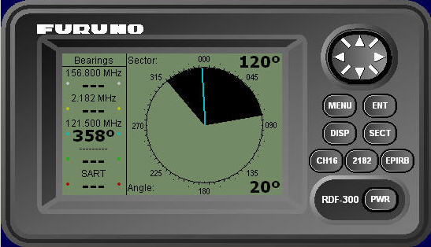

Radiogoniómetro
Un radiogoniómetro es un receptor de radio cuya antena es posible orientar y que se utiliza para obtener la dirección (demora) del origen de una emisión de radiofrecuencia. Se simula un radiogoniómetro genérico con cuatro canales de recepción que es posible activar de modo independiente. También se ha incluido dentro de la funcionalidad del radiogoniómetro simulado la detección de radiobalizas SART.
El panel del radiogoniómetro consta de una pantalla LCD y diversos controles. Una vez encendido, en la pantalla LCD se presenta:
- Diagrama polar de recepción de señales. Consiste en una circunferencia graduada en la que se presenta el sector de escucha del radiogoniómetro y las emisiones detectadas. Cuando el radiogoniómetro detecta una emisión debe mostrar una línea desde el centro del diagrama con la demora del origen de la emisión. Cuando el transmisor deja de emitir, la línea se muestra discontinua y al cabo de un cierto tiempo desaparece.
- Datos del sector de escucha del radiogoniómetro. Se presentarán la amplitud (60º o 120º) y la orientación seleccionadas.
- Frecuencia sintonizada y valor numérico de la demora de la emisión detectada para cada canal activo en el radiogoniómetro. Si hay varias emisiones se mostrará la demora de la primera emisión detectada.
En la cartografía, se mostraran las demoras de las emisiones como líneas que comienzan en la posición de la unidad controlada y que pasan por el punto desde donde se origina la emisión.

Desde el panel del radiogoniómetro el operador puede realizar las siguientes acciones:
- Encendido y apagado. Pulsando el botón PWR y tras un tiempo de espera de aproximadamente 5 segundos se conmuta el estado del equipo entre encendido y apagado. Al encenderse se presentará el diagrama polar y el estado seleccionado anteriormente. Cuando se encuentre apagado no mostrará ningún tipo de información al operador.
- Seleccionar la apertura del sector de escucha del radiogoniómetro. Pulsando el botón SECT se conmuta entre: 60º y 120º. Cuando funciona con 60º de apertura, las detecciones del equipo tendrán un error máximo de +/- 0.5º. Cuando funciona con 120º de apertura, las detecciones del equipo tendrán un error máximo de +/- 1.5º.
- Orientar el sector de escucha del radiogoniómetro. Pulsando el botón (Cursor) se puede cambiar la orientación del sector de escucha en saltos de 10 grados. El sector puede hacerse girar tanto en el sentido de las agujas del reloj como en el contrario.
- Seleccionar de forma rápida la escucha de las frecuencias de socorro:
- Pulsando el botón CH16 se activa el primer canal de recepción y se selecciona la frecuencia 156.800 MHz (canal 16 VHF).
- Pulsando el botón 2182 se activa el segundo canal de recepción y se selecciona la frecuencia 2182 KHz.
- Pulsando el botón EPIRB se activa el tercer canal de recepción y se selecciona la frecuencia 121.500 MHz.
- Presentar las distintas opciones del Menú de Configuración. Pulsando el botón Menú se presentan las siguientes opciones de configuración:
- Volver a la presentación del diagrama polar. Pulsando el botón DISP es posible abandonar las ventanas con opciones de menú y volver a la presentación del diagrama polar.

Opciones del Menú de Configuración:
Las distintas opciones del Menú de Configuración están accesibles mediante el botón Cursor. Mediante este menú se puede realizar las siguientes acciones:
- Cambiar la apertura del sector de escucha. Al seleccionar la opción Sector y pulsar el botón ENT se presenta una ventana con el valor de la apertura actualmente seleccionada. Pulsando el botón SECT se puede cambiar la apertura entre 60 y 120º. Tras pulsar de nuevo ENT se actualiza el valor de la apertura.
- Cambiar la orientación del sector de escucha. Al seleccionar la opción Central Angle y pulsar el botón ENT se presenta una ventana con el valor actualmente seleccionado.
- Seleccionar el modo de detección. El operador puede orientar la antena del radiogoniómetro en cualquier dirección. La orientación puede ser de dos tipos:
- Orientación manual: la antena del radiogoniómetro se mantiene en una orientación fija que el operador puede modificar.
- Orientación automática (exploración): la orientación de la antena va cambiando para realizar un barrido de 360º en el sentido de las agujas del reloj. Cuando la apertura es de 60º el ángulo central del sector de escucha da saltos de 45º. Cuando la apertura es de 120º da saltos de 105º (dejando siempre un solape de 15º). Entre salto y salto la antena se detiene 5 segundos durante los cuales se comprueba si se detecta alguna emisión entre las frecuencias sintonizadas y activas; si alguna emisión es detectada, se detiene automáticamente la exploración y se pasa a modo manual manteniendo la última orientación.
- Activar o desactivar de forma independiente la recepción en los cuatro canales de que dispone el equipo. Estos canales están prefijados en las 4 frecuencias principales de socorro: 156.800 MHz, 2182 KHz, 121.500 MHz y 243 MHz.

Mediante el botón Cursor se puede ajustar el valor del ángulo central del sector de escucha en saltos de 5º (valor configurable en el fichero simulador.ini). Una vez seleccionado el valor deseado pulsar el botón ENT.
Al seleccionar la opción Detection Mode se presenta en la pantalla LCD la siguiente ventana en la que se puede seleccionar modo Manual o Automático.

Una vez seleccionado el modo deseado mediante el cursor, pulsar ENT.
Cuando se activa uno de los canales, se presenta en el panel el valor de la frecuencia en la que está sintonizado. Si se detecta alguna emisión en dicha frecuencia, se presenta además el valor numérico de la demora.
Al seleccionar la opción Frequencies se presenta en la pantalla LCD la siguiente ventana en la que se podrá seleccionar la frecuencia y cambiar el estado de activación de cada uno de los canales disponibles en el radiogoniómetro.

Selección de la frecuencia de un canal. Mediante el botón Cursor seleccionar la frecuencia del canal que se desea ajustar. Pulsando el botón ENT se presenta una ventana con el valor de frecuencia actualmente seleccionado. Usando el botón Cursor se puede ajustar el valor de la frecuencia. Una vez alcanzado el valor deseado pulsar el botón ENT.
Cambio del estado de activación de un canal. Mediante el botón Cursor seleccionar el estado de activación del canal que se desea cambiar. Pulsando el botón ENT se presenta una ventana con el estado de activación actual. Usando el botón Cursor se puede cambiar dicho estado entre Activo y Desactivo. Una vez seleccionado el valor deseado pulsar el botón ENT.